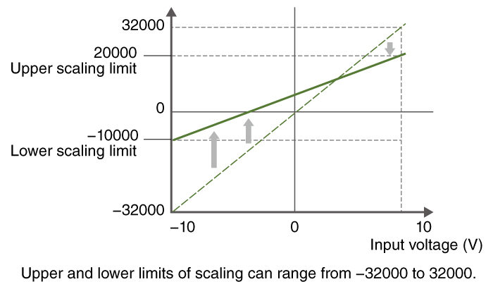
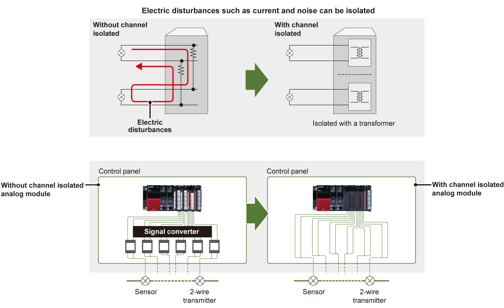
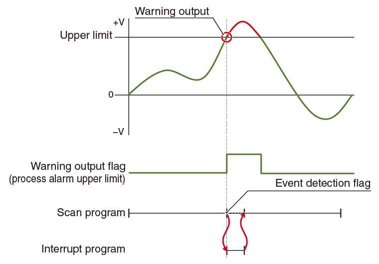
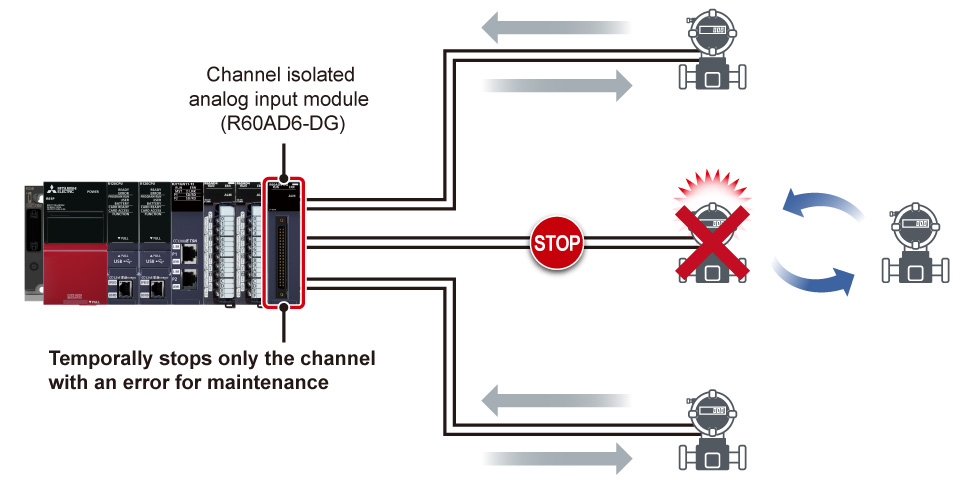
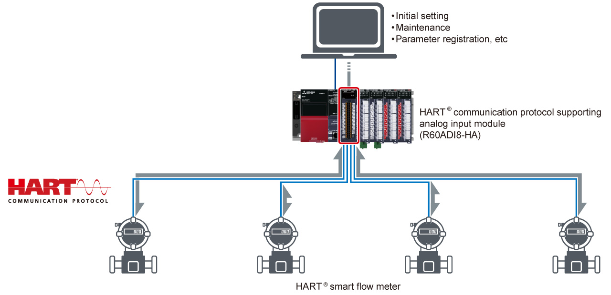
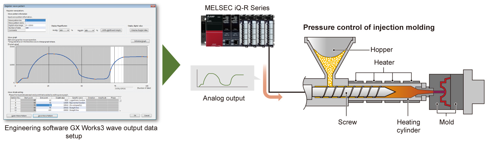

Controllers MELSEC iQ-R Series Product features -Analog-

Features
Scaling and shifting digital values without any programs<sup>InputOutput</sup>
- No programming
- Development cost reduction
- Program size reduction
- Scaling and shifting can be easily setup from only using the parameters. There is no need for additional programming
- Engineering costs and overall program size can be reduced


Galvanic channel isolation prevents electric disturbances such as current and noise<sup>InputOutput</sup>
- Prevention of current and noise interference
- Low-cost system configuration
- Channel isolated analog modules protect the internal module components from a short circuit (without requiring an additional signal converter) and therefore can configure a compact system at a low cost

High-speed and high-resolution sampling cycle visualizes small changes<sup>R60ADH4</sup>
- High-speed sampling
- High resolution
- The high-speed analog input module achieves a high-speed (1 µs/channel) and high-resolution (15- or 16-bit) sampling cycle. Even small changes in sensor output values can be sampled

First-order delay filter eliminating high-frequency noise<sup>Input</sup>
- High-frequency noise removal
- No programming
- The analog modules include a first-order delay filter that eliminates high-frequency noise interference and improves the accuracy of input analog signals
- Filter time constants can be easily setup using the module's dedicated parameters, thereby improving the processing time as an additional setup program (ladder) is not required

Simplified preventative maintenance with event driven performance<sup>*1</sup><sup>Input</sup>
- Easy preventive maintenance
- Prompt measures
- With the enhanced interrupt function by warning output flag, corrective interrupt procedures can be triggered or an alarm generated to initiate proper countermeasures regardless of the program scan time
- *1.A program that executes a process when requests such as operating a mouse and pressing a button are received. As programs can be executed per event, dividing processes and development are easy.

High-speed data collection highly demanded in industrial applications<sup>Input</sup>
- High-speed data collection
- Error identification
- Equipped with a logging function that collects analog input data at high speed, a large amount of data (up to 10k points) can be saved per channel
- Data collection can be stopped at an arbitrary timing in the program or data status changes as a hold trigger, enabling identification of an error and test data collection easily
- Data logging can be used in applications such as a motor inspection line, where motor performance can be logged at high speed and certain values such as voltage, current, torque and rotational speed analyzed through comparisons with different test patterns

Analog input module supporting 2-wire transmitter<sup>R60AD6-DG</sup>
- 2-wire transmitter supported
- Downtime reduction
- The channel isolated analog input module can supply power to the 2-wire transmitter, eliminating a dedicated power supply
- Power supply to the 2-wire transmitter can be temporarily stopped for each channel even when a failure occurs, allowing maintenance without stopping the system, thereby reducing downtime

HART<span class="ff-nsj">®</span> communication protocol allows communication with field devices<sup>R60ADI8-HA</sup>
- HART® communication supported
- Remote registration from the master
- The HART® communication protocol supporting analog input module can perform analog signal input as well as diagnostics of devices with HART® communication, therefore system maintenance is easy
- Various commands such as parameter registration of HART® communication-supporting field devices can be remotely set from the HART® communication protocol supporting analog input module

Faster, smoother predefined wave signal output<sup>Output</sup>
- Output pre-registered waveforms
- Reduced programming
- The analog output module enables pre-registered waveforms easily, realizing smoother continuous output at high-speed than program
- Registering the waveform in the module enables analog waveform control
- A dedicated analog output program such as for continuous control is not required, further reducing programming time
